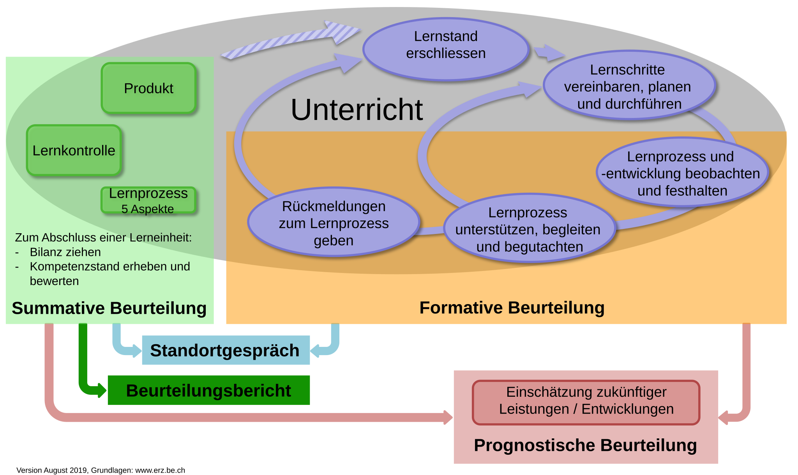

![]()
Funktionen
Was sind Funktionen?
Funktionen kennen sie bereits aus der Mathematik, z. B. f(x) = 2x.
In Python werden Funktionen mit def und return definiert und meistens verwendet, um Code besser zu strukturieren:
Parameter bzw. Argumente
Funktionen können (müssen aber nicht) Argumente haben:
def funktion_ohne_argument():
print("hello")
def funktion_mit_argument(x):
print(x)
# Funktionen haben immer Klammern (mit oder ohne Argumente)
funktion_ohne_argument()
funktion_mit_argument("world")
# Output: hello worldDie Argumente sind nur innerhalb der Funktion erreichbar:
Rückgabewert
Funktionen können (müssen aber nicht) einen Rückgabewert haben. Ein Rückgabewert ist nichts anderes als eine Variable, welche außerhalb der Funktion gespeichert werden kann:
Reine vs. Modifizierte Funktionen
In der Programmierung wird zwischen reinen (“pure”) und modifizierten (“impure”) Funktionen unterschieden. Reine Funktionen geben für den gleichen Input immer den gleichen Output, z. B. mathematische Funktionen. Benutzen sie, wenn möglich, reine Funktionen!
Beispiel
globaleVariable = 0 # Das ist eine globale Variable
def reine_funktion(x):
return 2*x
def modifizierte_funktion(x):
global globaleVariable # auf globale Variable zugreifen
globaleVariable = globaleVariable + 1
return 2*x*globaleVariable
reine_funktion(4) # Output: 8
reine_funktion(4) # Output: 8
modifizierte_funktion(4) # Output: 8
modifizierte_funktion(4) # Output: 16 --> anderer OutputAuftrag: Brief Adressieren
Erstellen sie eine Funktion, welche eine korrekt formatierte Adresse ausgibt. Rufen sie dann die Funktion auf und geben sie mind. 2 verschiedene Adressen aus. Die Funktion soll folgende Argumente besitzen:
Vorname, Name, Strasse, Strassennr, Plz, Ort
Lösungsvorschlag
def formatiere_adresse(vorname, nachname, strasse, strassen_nr, plz, ort):
print("==========================")
print(vorname+" "+nachname)
print(strasse+" "+strassen_nr)
print("CH-"+plz+" "+ort)
# Beispieladressen aufrufen
formatiere_adresse("Max", "Mustermann", "Musterstraße", "123", "12345", "Musterstadt")
formatiere_adresse("Anna", "Schmidt", "Hauptweg", "456", "54321", "Stadtmitte")Packages
Ausprobieren
Zufällige Zahlen
Projekt
Förderkreislauf
